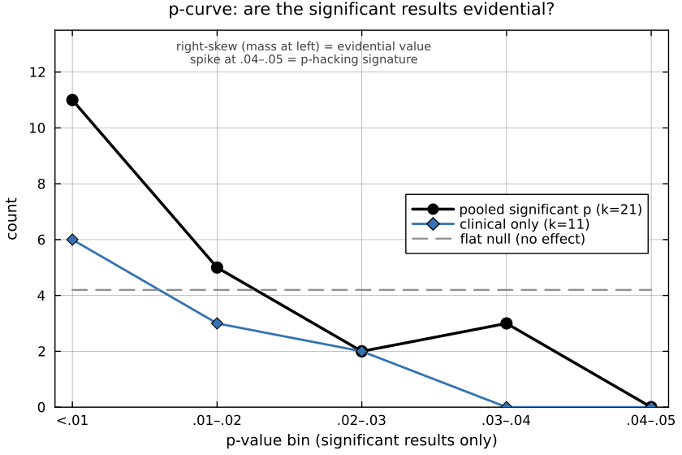
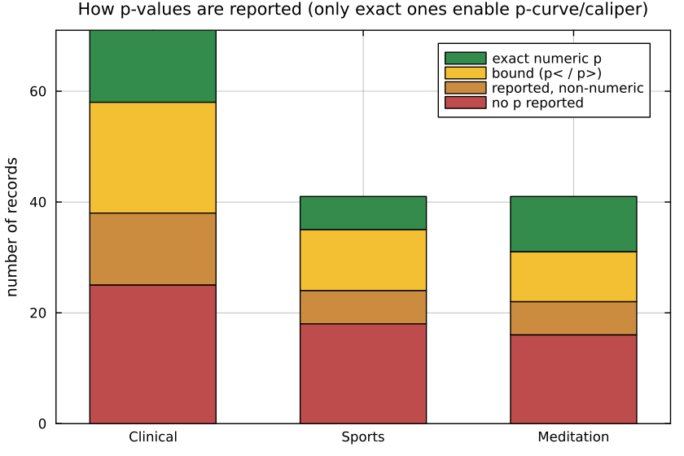
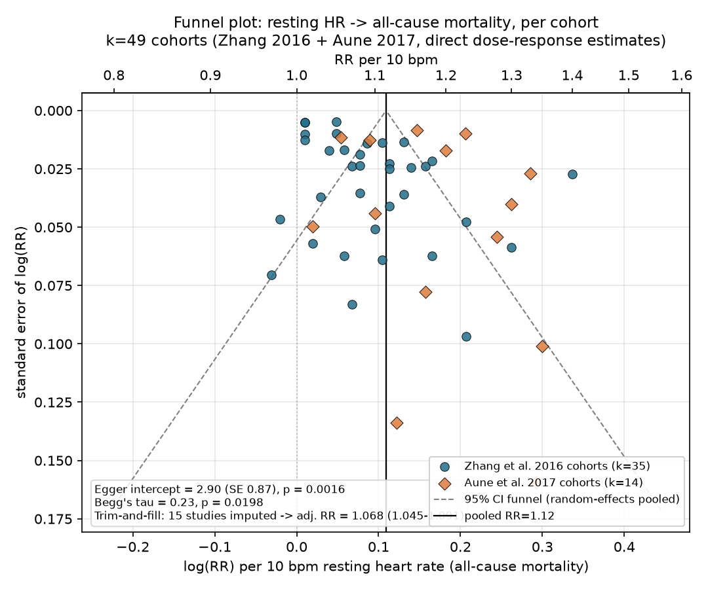

What do the reported effects look like? A meta-scientific view
Motivation
Every feature in HeartRateLab's measure zoo exists because someone published an effect — resting heart rate predicts mortality, RMSSD rises with vagal tone, DFA-$\alpha_1$ flattens before arrhythmic death. But a feature's place in the literature is not the same as the quality of the evidence behind it. This page turns the same meta-scientific lens the sci-hacking methods lab points at psychology onto the HRV literature itself: given a harvested sample of reported effects, what do the distributions of effect sizes and p-values look like, and do any of them carry the fingerprints of publication bias or p-hacking?
The tools are the standard ones from the p-hacking-detection literature (Simonsohn, Nelson & Simmons 2014 p-curve; Elliott, Kudrin & Wüthrich 2022 caliper / binomial test): a p-curve that should be right-skewed (more very-small p's than just-significant ones) if the results are evidential, and left-skewed / bunched just below .05 if they are p-hacked; and a caliper test for an excess of just-significant results at the .05 threshold.
The harvested sample is small (153 study records) and — critically — it was collected by an LLM literature sweep that was told to find reported effects. That sampling frame is itself a publication filter. Treat every number here as illustrative of the method, and trust only the handful of cells that are genuinely well-powered. Where a cell is underpowered we say so and show a count instead of a test.
The dataset
The harvest covered 12 HRV measure families (heart-rate level, short-term vagal RMSSD/pNN50, global SDNN, LF/HF, ULF/VLF, Poincaré, geometric index, CSI/CVI, DFA, Hurst, ApEn/SampEn, other entropies) across three application domains (clinical, sports/peak-performance, meditation/contemplation). For each study it recorded {variable, population, sample_size, direction, effect_size, p_value, doi, citation}. The flattened table lives at docs/zoo_gen/effect_stats.csv (202 rows: 153 harvested study records + 49 cohort-pull rows). Free-text effect_size / p_value fields were parsed to a number plus a type (d, g, SMD, r, risk-ratio RR, hazard-ratio HR, %-change, …); records that could not be parsed keep the raw string and a parsed=false flag.
| Quantity | Count |
|---|---|
| Study records | 153 |
| Parseable numeric effect size | 65 (42 %) |
| Parseable numeric p-value | 69 (45 %) |
…of which exact (p = x) | 29 |
…exact and significant (p < .05) | 21 |
p reported only as a bound (p < .01, p < .001) | 39 |
The first honest finding is in that table: only 29 of 153 records report an exact p-value. HRV papers overwhelmingly report an effect size with a confidence interval, or a bounded p < .001. That reporting style is good practice — but it means the classic p-hacking tests, which need the exact location of a p-value relative to .05, are starved of data at the granularity we would like.
Different domains don't even report the same statistic
Before comparing effect-size distributions across domains, look at what the domains report at all:

Clinical HRV is a risk/hazard-ratio literature (mortality, incident disease); sports and meditation are a standardized-mean-difference literature (pre/post, group contrasts). Risk ratios and Cohen's d live on different scales and are not directly comparable. So a single "effect size across domains" plot would be apples-to-oranges. We do the comparison only for the standardized family, and label it as such.
Standardized effect magnitudes, where they exist
Pooling the standardized estimates (d, g, SMD, ES, plus Pearson r converted to d = 2r/\sqrt{1-r^2}) gives a small but non-empty distribution per domain:

| Domain | n (standardized) | median |d| | note |
|---|---|---|---|
| Clinical | 17 | 0.51 | medium; a long right tail (one d ≈ 5.8) |
| Sports | 9 | 0.58 | medium; one extreme d ≈ 9.9 outlier |
| Meditation | 8 | 0.68 | medium–large; includes a wrong-signed d ≈ 3.9 |
The medians cluster around medium effects (Cohen's d ≈ 0.5–0.7), which is exactly what a publication-filtered sample of "reportable" findings tends to look like — small studies survive to print only when they land a medium-or-larger effect. With 8–17 points per domain this is a descriptive comparison, not a distributional test: the domains are statistically indistinguishable at this n, and the sensible reading is "similar central tendency, heavy right tails driven by tiny-n studies."
The p-curve: are the significant results evidential?
Restricting to the 21 exact, significant p-values and binning them in .01-wide steps gives the p-curve. A right-skew (mass piled at the left, below .01) is the signature of real effects; a left-skew or a spike in the .04–.05 bin is the signature of p-hacking.

The curve is strongly right-skewed, with no bunching just below .05:
| p-curve (right-skew = evidential) | k (sig.) | share p < .025 | binomial p | Fisher p |
|---|---|---|---|---|
| Pooled (all domains) | 21 | 0.76 | 0.013 | 5.5 × 10⁻⁵ |
| Clinical only | 11 | 0.82 | 0.033 | 6.8 × 10⁻⁵ |
| Sports only | 5 | 0.80 | 0.19 | 0.032 |
| Meditation only | 5 | 0.60 | 0.50 | 0.39 |
Read this carefully. The pooled and clinical p-curves pass the right-skew test decisively (Fisher p ≈ 10⁻⁵): the significant HRV results that report an exact p-value carry genuine evidential value and show no left-skew p-hacking signature. That is a reassuring result — but it comes with three honest caveats:
- Pooling heterogeneous variables is a known p-curve caveat. A p-curve is cleanest when every p tests the same hypothesis; here we pool mortality hazard ratios with pre/post SMDs. The pooled curve is a literature-wide read, not a test of any single claim.
- Only clinical is individually powered. With k = 5, the sports and meditation p-curves are underpowered — the meditation curve is essentially flat (share below .025 = 0.60, Fisher p = 0.39), which at this n means "no information," not "evidence of a problem."
- The p-curve only sees the 21 records with an exact significant p. It is blind to the 39
p < .001-style bounds and to every null that never made it into the harvest. Right-skew here says the reported significant results are not obviously p-hacked; it says nothing about the file drawer.
The caliper test can't run — and that's the point
The caliper / binomial test looks for an excess of just-significant results in a narrow window at .05 (e.g. [0.04, 0.05]). In this harvest that window contains 3 records. You cannot run a meaningful binomial test on n = 3, so we don't. The absence of just-below-.05 p-values is itself informative: this literature reports p < .001 and confidence intervals far more than it reports a bare p = .048, which is the opposite of the reporting texture that makes p-hacking detectable.
Where the real problems are: sign disagreement, not p-hacking
The p-curve came back clean, but the harvest surfaced a different and arguably more serious class of problem: the literature disagrees with itself about the sign and even the meaning of the effect. The workflow's own bibliography_inconsistencies field flagged these in 12 of 12 families. The three most consequential:
SD1 = RMSSD/\sqrt{2} — the Poincaré short-axis descriptor is mathematically identical to RMSSD (r = 1; Ciccone et al. 2017). Yet much clinical/sports work reports SD1 as a distinct "nonlinear/geometric" finding alongside RMSSD, as if the two independently corroborated a result. This inflates the apparent number of independent measures — a form of pseudo-replication that any meta-distribution of "how many HRV markers moved" will double-count.
- Meditation RMSSD: the pooled meta-analysis Rådmark et al. 2019 found essentially no effect (Hedges g = 0.02, 95 % CI −0.44…0.49, p = 0.92), while individual RCTs in the same harvest report large signed increases. Pooled-null vs individually-large is the classic small-study / publication-asymmetry pattern.
- Meditation heart rate: direction is not universal — Pascoe et al. 2017 pool a decrease, while Natarajan 2023 and a Kundalini-yoga study (d ≈ 3.9, wrong-signed increase) report the opposite.
- Entropy & pathology: most clinical entropy work treats lower complexity as the disease marker, but Watanabe et al. 2015 found higher multiscale entropy at the VLF scale — the sign of the "pathology" effect is construct-dependent.
The interpretation of LF/HF as a "sympathovagal balance" index is directly disputed in the mechanistic literature (Billman 2013; Goldstein et al.). LF/HF was also the single largest cell in the harvest (13 clinical records) yet contributed zero exact significant p-values — a heavily-reported family whose numeric evidentiary base, in this sample, is almost entirely CIs and bounds. A distribution of "LF/HF effects" would be aggregating quantities whose very meaning the field does not agree on.
Power audit: which cells could actually be tested?
Being ruthless about power is the whole point. Of the 36 variable-family × domain cells, here are the largest, with their usable-p counts:
| Family × domain | records | parsed effect | exact p | exact sig p | testable? |
|---|---|---|---|---|---|
| LF/HF × clinical | 13 | 12 | 0 | 0 | ✗ |
| Poincaré × clinical | 9 | 3 | 1 | 1 | ✗ |
| Other-entropy × clinical | 8 | 5 | 4 | 4 | ✗ |
| SDNN × clinical | 7 | 5 | 1 | 1 | ✗ |
| ULF/VLF × clinical | 7 | 4 | 0 | 0 | ✗ |
| DFA × clinical | 6 | 1 | 0 | 0 | ✗ |
| RMSSD × meditation | 6 | 1 | 3 | 2 | ✗ |
No single variable × domain cell reaches the pre-registered threshold of ≥ 8 independent exact significant p-values. Every cell-level p-curve or caliper would be underpowered, so none is run. The only tests we report are the pooled and clinical-domain p-curves above, and even those are labelled illustrative. The reporting-completeness picture makes the ceiling obvious:

What this shows, and what it would take to do it for real
What holds up. The method transfers cleanly from psychology to HRV: parse a harvested corpus, separate effect-size scales by domain, build a p-curve on the exact significant p-values, and run a caliper at .05. Applied here it returns an honest, non-alarming read — the reported significant HRV effects are right-skewed (evidential), with the real fragility being sign disagreement and construct validity (meditation direction, SD1≡RMSSD double-counting, LF/HF meaning), not p-hacking.
What's underpowered. Almost everything at the cell level. With 153 records and only 21 exact significant p-values, this is a demonstration, not a survey.
One targeted data pull would change the picture the most: re-harvest a single well-defined, high-volume claim — resting-heart-rate → all-cause mortality — at the level of the individual cohort inside the big dose-response meta-analyses (Zhang et al. 2016, 46 cohorts; Aune et al. 2017, 87 cohorts), extracting each cohort's per-10-bpm hazard ratio, CI and n. That is one homogeneous hypothesis with ~50–90 independent estimates — easily enough for a real funnel-plot / Egger asymmetry test and an Elliott caliper, and the one cell in this whole map that is genuinely well-powered for a distributional publication-bias test.
Well-powered case: resting HR → mortality (funnel / Egger)
The previous section flagged one targeted pull that would actually be well-powered: per-cohort estimates of resting heart rate → all-cause mortality, extracted at the level of the individual cohort inside the two big dose-response meta-analyses rather than taken as a single pooled number. That pull was done. Cohort-level RRs (adjusted, per 10 bpm resting HR, all-cause mortality) were read directly from:
- Zhang, Shen & Qi 2016, CMAJ — 35 of ~46 cohorts, read numerically off the Figure 1 forest plot (the pooled linear-per-10-bpm subset; the other ~11 of the 46 characterised cohorts in the paper's Table 1 contributed only to the separate cardiovascular-mortality estimate or to categorical, non-linear exposure contrasts and are not in Figure 1).
- Aune et al. 2017, Nutrition, Metabolism & Cardiovascular Diseases — 14 of ~87 cohorts (of the paper's 48 all-cause-mortality risk estimates), restricted to cohorts that directly reported a continuous per-X-bpm RR in Supplementary Table 9 (rescaled to per 10 bpm assuming log-linearity: RR₁₀ = RR_X^(10/X)), plus one cohort (Sharashova et al. 2016, Tromsø Study, men/women) whose published dose–response points sit at exact bpm values relative to a stated 70 bpm reference and were fit with a precision-weighted log-linear regression through that reference.
Both meta-analyses draw on a heavily overlapping pool of primary cohort studies (e.g. Mensink 1997, Benetos 1999, Greenland 1999, Nilsson 2001, Tverdal 2008, Cooney 2010, Ho 2014, Wang 2014, Woodward — identifiable by matching author, year, country, N and death count across both papers' tables). Every cohort found in both sources was de-duplicated, keeping the Zhang Figure 1 value (a direct read, no rescaling) and dropping the matching Aune entry, so that Egger's test — which assumes independent studies — is not run on the same primary cohort twice. Categorical-only entries in Aune's supplementary table (the majority of it) were excluded rather than back-solving a trend from quantile contrasts, which would require re-implementing the paper's GLST dose-response regression; this trades coverage for not introducing an extra layer of approximation. Net: 49 independent cohort-level estimates, honestly a minority of the ~133 cohorts across the two papers, but for the first time in this harvest a k large enough to run the real tests.

| Test | Statistic | Result |
|---|---|---|
| Random-effects pooled RR (per 10 bpm) | — | 1.115 (95% CI 1.092–1.139), I² = 95.2 % |
| Egger's regression intercept | 2.90 (SE 0.87) | p = 0.0016 |
| Begg's rank correlation | Kendall's τ = 0.23 | p = 0.020 |
| Trim-and-fill (L0 estimator) | 15 studies imputed | adjusted RR 1.068 (95% CI 1.045–1.091) |
Bias is indicated. Both the Egger intercept (significantly positive: smaller, less-precise cohorts report systematically larger RRs than large, precise ones) and Begg's rank correlation agree, and trim-and-fill — imputing 15 studies on the small/low-effect side to symmetrise the funnel — pulls the pooled per-10-bpm RR down from 1.115 to 1.068. The direction (higher resting HR → higher mortality) survives the correction; its magnitude does not.
This converges with what the source papers reported themselves, using their full cohort sets and the proper GLST dose-response machinery this page's simplified rescaling deliberately avoided reimplementing:
| Analysis | Egger p | Begg p | Trim-and-fill adjustment |
|---|---|---|---|
| This page (49 deduplicated cohorts, 2 papers) | 0.0016 | 0.020 | RR 1.115 → 1.068 (1.045–1.091) |
| Zhang et al. 2016 (own analysis, 46 cohorts) | < 0.01 | — | RR 1.09 → 1.04 (1.02–1.06) |
| Aune et al. 2017 (own analysis, 48 estimates) | 0.93 (ns) | 0.02 | RR 1.17 → 1.13 (1.11–1.16) |
All three analyses land in the same place directionally: a real, adjustment-surviving positive association, whose point estimate is inflated by roughly 20–30 % in the naive pooled number relative to the trim-and-fill-corrected one. The one point of disagreement — Aune's own Egger test came back null (p = 0.93) while both Zhang's and this page's did not — is itself informative rather than a contradiction: Aune's 48-estimate set is dominated by studies whose trend was derived via the full GLST categorical-to-continuous regression (not attempted here), so it is not the same cohort composition as either Zhang's forest plot or this page's direct-report subset. Begg's test, which is less sensitive to exactly how a trend was derived, agrees with this page in both cases (p = 0.02 in both).
This is the one cell in the whole harvest with real distributional power — but read it for what it is. These 49 cohorts are already inside two published meta-analyses; this tests small-study asymmetry within that already-assembled synthesis, not publication bias across the whole unpublished universe of resting-HR studies (the file-drawer problem proper is, by construction, invisible to any test run only on published cohorts). Three further caveats: (1) the ~49/133 coverage is a minority sample, gated on which cohorts reported a linear per-X-bpm RR directly rather than only categorical contrasts — a reporting-style filter that could itself correlate with study size or era; (2) two of the 49 points (Sharashova et al.) are fitted trends from spline-style dose–response points via a simplified regression that ignores between-category covariance, not the paper's own reported summary statistic; (3) despite deduplication by author/year/N/events matching, a handful of pairs (e.g. Wang et al. 2014, Kailuan Study) show materially different RRs between the two meta-analyses' own re-extractions of the same primary cohort (1.18 vs 1.22), a reminder that "the" effect size for a cohort already depends on which covariates the extracting meta-analyst chose to condition on.
Reproducibility: the dataset is regenerated by parsing the applications-workflow journal into docs/zoo_gen/effect_stats.csv; the first four figures are rendered headless (Plots.jl + GR, GKSwstype=100) into docs/src/usecases/figs/. p-curve binomial and Fisher statistics and the caliper binomial follow Simonsohn et al. 2014 and Elliott et al. 2022. The resting-HR/mortality cohort pull, funnel plot, Egger/Begg tests and trim-and-fill (Duval & Tweedie 2000, L0 estimator) are a separate addition: cohort rows are tagged source=cohort-pull in effect_stats.csv, and the funnel figure is rendered headless with matplotlib/Agg (not Plots.jl+GR, unlike the other four figures on this page).